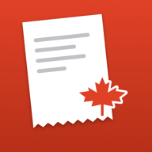

Easy Receipt CanadaPrivacy Policy: Easy Receipt Canada
Effective date: October 29, 2026
Who we are: Xinran Zhou, an individual developer in Canada ("we", "us").
Contact: easyreceiptca@gmail.com
1. The short version
- Your receipts stay on your iPhone by default.
- We have no ads, no tracking, no analytics tools and we never sell data.
- Two optional features send data off your phone. Both are off until you turn them on:
- Read receipts with Claude: sends the text of a receipt (never the photo) to be read by an AI service.
- Cloud backup (Pro): stores your receipts and photos in Canada.
- You can delete your account and all your cloud data from Settings at any time.
2. Person in charge of protecting personal information
The person in charge of the protection of personal information is Xinran Zhou. Reach us at easyreceiptca@gmail.com.
3. What we collect and why
a) Data that stays on your iPhone (default)
Easy Receipt Canada scans receipts with your camera, reads them with Apple's on-device text recognition, detects the province, splits sales tax (GST, HST, PST, RST, QST) and files each expense under a CRA T2125 category. Receipts, photos, reports and settings are stored in the app's local database on your device. We do not receive this data. If you delete the app, this data is deleted from your phone.
Receipts are business financial information. They can also contain personal information, such as vendor names, your notes, and your name or address if they are printed on a receipt.
b) If you turn on "Read receipts with Claude"
| What is sent | Where | Why |
|---|---|---|
| The text recognized on a receipt (never the photo) | Our server function (Supabase Edge Functions, project in Canada, Montréal region), which forwards it to Anthropic's Claude API in the United States | To return structured fields (vendor, date, amounts, taxes) so you do not type them |
- Our server logs only usage metadata: your anonymous user id, the model used, token counts, request status and timestamp. We do not store the receipt text.
- Anthropic acts as our service provider. How it handles API data is described in its commercial terms and privacy policy.
- Because the text may contain personal information, avoid scanning receipts that show information you do not want processed this way. You can turn this feature off at any time in Settings.
c) If you turn on cloud backup (Pro)
We store in Supabase, in Canada (ca-central-1): vendor, date, province, amounts, taxes, category, notes, vendor tax numbers, the recognized text, and your receipt photos. Row-level security means each user can only see their own data. We use it only to back up and restore your receipts.
d) Accounts
- Anonymous account: created automatically the first time you use Claude reading or backup. It is a random id with no name or email.
- Sign in with Apple (optional): links your Apple ID so you can restore on another device. We receive an email address, which may be an Apple private-relay address.
e) Purchases
Pro is an Apple In-App Purchase. Apple handles payment. We do not see your card or payment details.
f) What we do not do
No advertising, no tracking across apps or websites, no analytics or third-party SDKs (only Apple frameworks), and no sale or sharing of data for marketing.
4. Legal bases and consent
- PIPEDA (federal): we rely on your consent. Optional features are off by default and you opt in. You can withdraw consent at any time by turning a feature off or deleting your account.
- Quebec's Law 25 (Act respecting the protection of personal information in the private sector): we collect only what is needed for the purposes above and ask for your express consent before any optional feature sends data off your device. Consent is requested separately for each feature, in clear terms.
- Data needed to run the app on your device never leaves it, so no consent is needed for that.
5. Transfers outside Quebec and Canada
- Cloud backup data and anonymous account data are stored in Canada (Montréal).
- When you turn on Claude reading, receipt text is processed by Anthropic in the United States. This happens only when you turn it on, and only for the text of receipts you choose to read.
- Before this transfer we assessed the privacy risks, as required by Quebec law, and rely on contractual protections with the provider. Privacy laws in the United States differ from those in Quebec and Canada.
- You can avoid any transfer outside Canada by leaving Claude reading off.
6. How long we keep data
- On your iPhone: until you delete the receipts or the app.
- Cloud backup: until you delete the receipts or your account. Account deletion removes your cloud data immediately.
- Usage logs (user id, model, token counts, status, timestamp): kept for 12 months to run, secure and bill the service, then deleted automatically.
- Receipt text sent for Claude reading: not stored by us. Anthropic's handling is described in its terms and privacy policy.
7. Security
Data is encrypted in transit (TLS). Cloud data is protected by row-level security and access controls on the Canadian-hosted database. No system is perfectly secure. If an incident presents a risk of serious injury to you, we will notify you and the regulator as the law requires.
8. Your rights
You can ask to access, correct or delete your personal information, receive a copy in a common format (portability), or withdraw your consent.
- In the app: edit or delete receipts, export CSV or PDF, turn off Claude reading or backup, and use Settings > Delete account to remove your account and all cloud data. Deletion is immediate. Receipts stored locally stay on your phone unless you delete them or the app.
- By email: write to easyreceiptca@gmail.com. We reply within 30 days.
9. Children
The app is not directed at children under 14. We do not knowingly collect information from them. If you believe a child has given us information, contact us and we will delete it.
10. Complaints
Please contact us first. You can also complain to:
- Commission d'accès à l'information du Québec: https://www.cai.gouv.qc.ca
- Office of the Privacy Commissioner of Canada: https://www.priv.gc.ca
11. Changes to this policy
We will post changes here and update the effective date. For significant changes, we will tell you in the app before they apply. If a change requires new consent, we will ask for it.
Politique de confidentialité : Easy Receipt Canada
Date d'entrée en vigueur : 29 octobre 2026
Qui nous sommes : Xinran Zhou, développeur indépendant au Canada (« nous »).
Coordonnées : easyreceiptca@gmail.com
1. En bref
- Vos reçus restent sur votre iPhone par défaut.
- Nous n'avons ni publicité, ni suivi, ni outil d'analyse, et nous ne vendons jamais de données.
- Deux fonctions facultatives envoient des données hors de votre téléphone. Les deux sont désactivées tant que vous ne les activez pas :
- Lire les reçus avec Claude : envoie le texte d'un reçu (jamais la photo) à un service d'IA pour qu'il soit lu.
- Sauvegarde infonuagique (Pro) : stocke vos reçus et vos photos au Canada.
- Vous pouvez supprimer votre compte et toutes vos données infonuagiques dans les réglages en tout temps.
2. Personne responsable de la protection des renseignements personnels
La personne responsable de la protection des renseignements personnels est Xinran Zhou. Joignez-nous à easyreceiptca@gmail.com.
3. Ce que nous recueillons et pourquoi
a) Données qui restent sur votre iPhone (par défaut)
Easy Receipt Canada numérise vos reçus avec la caméra, les lit grâce à la reconnaissance de texte d'Apple directement sur l'appareil, détecte la province, sépare les taxes de vente (TPS, TVH, TVP, TVD, TVQ) et classe chaque dépense dans une catégorie T2125 de l'ARC. Les reçus, les photos, les rapports et les réglages sont stockés dans la base de données locale de l'application, sur votre appareil. Nous ne recevons pas ces données. Si vous supprimez l'application, elles sont effacées de votre téléphone.
Les reçus sont des renseignements financiers d'entreprise. Ils peuvent aussi contenir des renseignements personnels, comme le nom des fournisseurs, vos notes, ainsi que votre nom ou votre adresse s'ils sont imprimés sur un reçu.
b) Si vous activez « Lire les reçus avec Claude »
| Ce qui est envoyé | Où | Pourquoi |
|---|---|---|
| Le texte reconnu sur un reçu (jamais la photo) | Notre fonction serveur (Supabase Edge Functions, projet situé au Canada, région de Montréal), qui le transmet à l'API Claude d'Anthropic, aux États-Unis | Pour obtenir des champs structurés (fournisseur, date, montants, taxes) sans les saisir vous-même |
- Notre serveur ne journalise que des métadonnées d'utilisation : votre identifiant d'utilisateur anonyme, le modèle utilisé, le nombre de jetons, l'état de la requête et l'horodatage. Nous ne conservons pas le texte du reçu.
- Anthropic agit comme fournisseur de services. Sa façon de traiter les données de l'API est décrite dans ses conditions commerciales et sa politique de confidentialité.
- Comme le texte peut contenir des renseignements personnels, évitez de numériser des reçus montrant des renseignements que vous ne voulez pas voir traités de cette façon. Vous pouvez désactiver cette fonction en tout temps dans les réglages.
c) Si vous activez la sauvegarde infonuagique (Pro)
Nous stockons dans Supabase, au Canada (ca-central-1) : le fournisseur, la date, la province, les montants, les taxes, la catégorie, les notes, les numéros de taxes du fournisseur, le texte reconnu et vos photos de reçus. La sécurité au niveau des lignes fait que chaque utilisateur ne voit que ses propres données. Nous les utilisons uniquement pour sauvegarder et restaurer vos reçus.
d) Comptes
- Compte anonyme : créé automatiquement la première fois que vous utilisez la lecture par Claude ou la sauvegarde. C'est un identifiant aléatoire, sans nom ni courriel.
- Se connecter avec Apple (facultatif) : lie votre identifiant Apple pour restaurer vos données sur un autre appareil. Nous recevons une adresse courriel, qui peut être une adresse de relais privé d'Apple.
e) Achats
Pro est un achat intégré Apple. Apple gère le paiement. Nous ne voyons ni votre carte ni vos renseignements de paiement.
f) Ce que nous ne faisons pas
Aucune publicité, aucun suivi entre applications ou sites Web, aucun outil d'analyse ni trousse de développement tierce (seulement les cadres d'Apple), et aucune vente ni communication de données à des fins de marketing.
4. Fondements juridiques et consentement
- LPRPDE (fédéral) : nous nous appuyons sur votre consentement. Les fonctions facultatives sont désactivées par défaut et vous les activez volontairement. Vous pouvez retirer votre consentement en tout temps en désactivant une fonction ou en supprimant votre compte.
- Loi 25 du Québec (Loi sur la protection des renseignements personnels dans le secteur privé) : nous ne recueillons que ce qui est nécessaire aux fins décrites ci-dessus et demandons votre consentement exprès avant qu'une fonction facultative n'envoie des données hors de votre appareil. Le consentement est demandé séparément pour chaque fonction, en termes clairs.
- Les données nécessaires au fonctionnement de l'application sur votre appareil ne le quittent pas : aucun consentement n'est donc requis à cet égard.
5. Communication hors du Québec et du Canada
- Les données de sauvegarde infonuagique et des comptes anonymes sont stockées au Canada (Montréal).
- Quand vous activez la lecture par Claude, le texte des reçus est traité par Anthropic aux États-Unis. Cela se produit seulement si vous l'activez, et seulement pour le texte des reçus que vous choisissez de faire lire.
- Avant cette communication, nous avons évalué les risques pour la vie privée, comme l'exige la loi du Québec, et nous nous appuyons sur des protections contractuelles avec le fournisseur. Les lois sur la protection de la vie privée des États-Unis diffèrent de celles du Québec et du Canada.
- Vous pouvez éviter toute communication hors du Canada en laissant la lecture par Claude désactivée.
6. Durée de conservation
- Sur votre iPhone : jusqu'à ce que vous supprimiez les reçus ou l'application.
- Sauvegarde infonuagique : jusqu'à ce que vous supprimiez les reçus ou votre compte. La suppression du compte efface immédiatement vos données infonuagiques.
- Journaux d'utilisation (identifiant, modèle, nombre de jetons, état, horodatage) : conservés 12 mois pour exploiter et sécuriser le service et en assurer la facturation, puis détruits automatiquement.
- Texte envoyé pour la lecture par Claude : non conservé par nous. Le traitement par Anthropic est décrit dans ses conditions et sa politique de confidentialité.
7. Sécurité
Les données sont chiffrées en transit (TLS). Les données infonuagiques sont protégées par la sécurité au niveau des lignes et des contrôles d'accès sur la base de données hébergée au Canada. Aucun système n'est parfaitement sûr. Si un incident présente un risque de préjudice sérieux pour vous, nous vous en aviserons, ainsi que l'organisme de réglementation, comme la loi l'exige.
8. Vos droits
Vous pouvez demander d'accéder à vos renseignements personnels, de les faire corriger ou supprimer, d'en recevoir une copie dans un format courant (portabilité) ou de retirer votre consentement.
- Dans l'application : modifier ou supprimer des reçus, exporter en CSV ou en PDF, désactiver la lecture par Claude ou la sauvegarde, et utiliser Réglages > Supprimer le compte pour effacer votre compte et toutes vos données infonuagiques. La suppression est immédiate. Les reçus stockés localement restent sur votre téléphone, sauf si vous les supprimez ou supprimez l'application.
- Par courriel : écrivez à easyreceiptca@gmail.com. Nous répondons dans les 30 jours.
9. Enfants
L'application ne s'adresse pas aux enfants de moins de 14 ans. Nous ne recueillons pas sciemment de renseignements à leur sujet. Si vous croyez qu'un enfant nous a fourni des renseignements, écrivez-nous et nous les supprimerons.
10. Plaintes
Veuillez d'abord nous contacter. Vous pouvez aussi déposer une plainte auprès de :
- la Commission d'accès à l'information du Québec : https://www.cai.gouv.qc.ca
- le Commissariat à la protection de la vie privée du Canada : https://www.priv.gc.ca
11. Modifications de cette politique
Nous publierons les modifications ici et mettrons à jour la date d'entrée en vigueur. Pour les changements importants, nous vous en informerons dans l'application avant leur application. Si un changement exige un nouveau consentement, nous le demanderons.